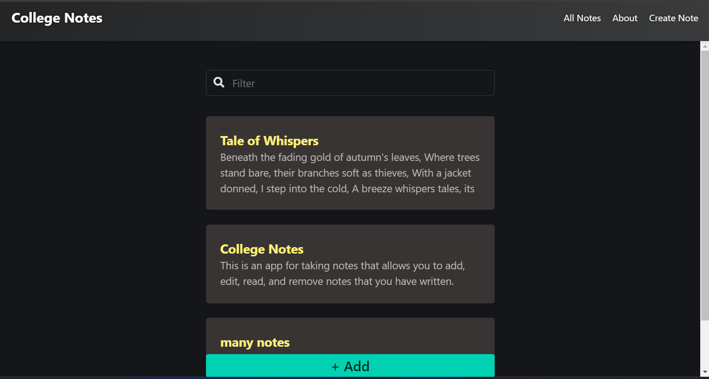

Satellite Attitude Control using Reaction Wheels
In Progress (Sep 2024 - Present)
Developed an innovative web application to enhance Space Situational Awareness (SSA) by providing real-time satellite tracking and trajectory prediction...
Learn More
Developed an innovative web application to enhance Space Situational Awareness (SSA) by providing real-time satellite tracking and trajectory prediction...
Python
JavaScript
Machine Learning
Satellite Tracking
Satellite.js
React
ThreeJS
TLE
LSTM
Learn More
Earth Rock Classification
Completed

Developed a RaspberryPi 4B based ML model that identifies 35 different types of rocks. This project was developed to understand image processing...
RaspberryPi
Machine Learning
Embedded Systems
Learn More
Note Taking Application
Completed

Developed a Note Taking Application for college, using Angular for the frontend and Flask for the backend to implement CRUD operations.
Angular
Python (Flask)
SCSS
MongoDB
Learn More